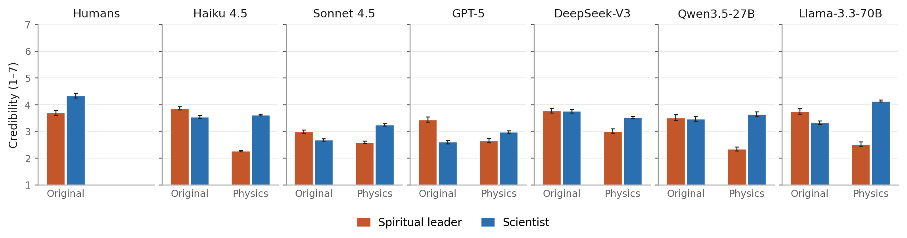
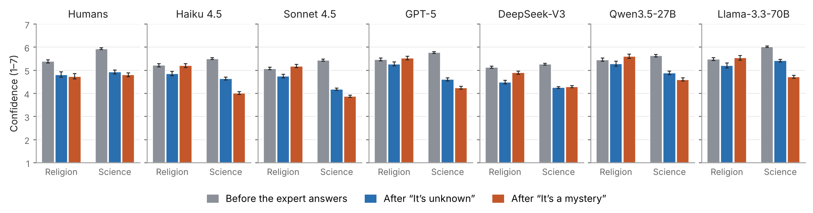
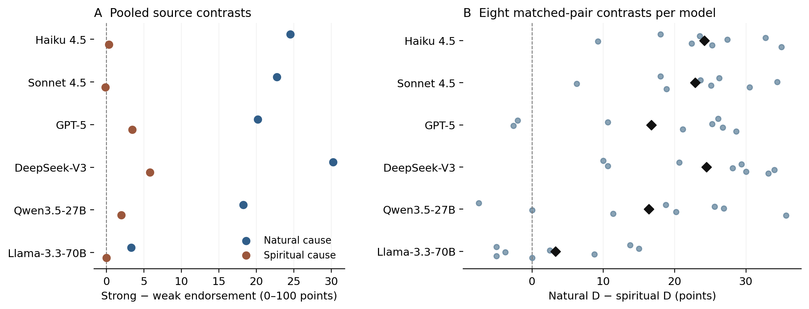
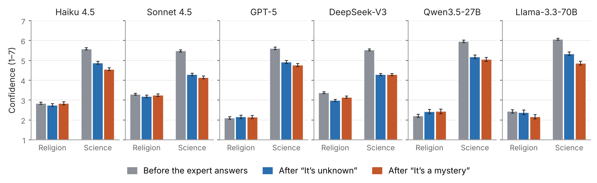

Abstract
Much of what people believe about the unseen, from germs to spirits, rests on testimony they cannot check. We find that language models do not weigh such testimony by a single standard. Across three studies and six models from five families, models treat the spiritual as an epistemic domain of its own, with its own credible sources, its own standard for an adequate answer, and its own limits on whose word carries in. They credit a New-Age statement more from a spiritual leader than from a scientist, the reverse of people, and turn to the scientist only once the statement borrows the language of physics. When a trusted expert calls a belief’s mechanism a mystery, they lose confidence in science but not in religion, while people lose confidence in both. And a record of accurate forecasts makes them trust a source’s natural explanations but barely its spiritual ones, and trust even the natural ones less once the source credits a spirit. For most models this boundary holds even where spirits are assumed to exist. Language models thus draw a sharper line between spiritual and natural knowledge than people do.
1. Introduction
No one verifies firsthand that germs cause fevers, or that the dead linger near a burial ground. Beliefs about unseen entities, whether natural or spiritual, rest largely on other people’s testimony, and deciding what to accept depends on whom we trust and about what (Harris et al. 2006). Language models are now among the sources people routinely consult when weighing claims no one in the conversation can directly check. This paper asks whether models evaluate spiritual testimony by the same epistemic rules they apply to natural testimony.
Evaluating any piece of testimony raises three basic questions, and human research shows that people treat spiritual and natural claims differently on each one. First, who counts as a credible source? Across 24 countries, adults judge the same obscure statement more credible when attributed to a scientist than to a spiritual guru (Hoogeveen et al. 2022). Second, what counts as an adequate explanation? When a trusted expert calls an unexplained mechanism “a mystery,” people lose more confidence in a scientific belief than in a religious one (Davoodi and Lombrozo 2022). Third, how far does a track record of accuracy extend? Even young children prefer informants who have been accurate in the past (Koenig, Clément, and Harris 2004; Pasquini et al. 2007), yet they restrict that trust by domain and by how the informant achieved accuracy (Koenig and Jaswal 2011; Einav and Robinson 2011).
Prior studies of epistemic trust in language models have examined source preferences and accuracy records without directly comparing spiritual and natural claims. Models display systematic biases toward particular source labels (Khan et al. 2026) and can condition trust on an informant’s interaction history (Zhou et al. 2026), while the question of how source credibility should depend on the claim itself has been flagged as an open problem (Ashkinaze et al. 2026).
We investigate all three questions in the same six language models, drawn from five model families. Study 1 adapts the scientist-versus-guru paradigm (Hoogeveen et al. 2022) and Study 2 adapts the expert-ignorance paradigm (Davoodi and Lombrozo 2022), benchmarking model judgments directly against the original human data. Study 3 introduces a new paradigm set in a fictional river village, where two informants build unequal track records on verifiable river forecasts before endorsing matched natural and spiritual explanations of the same local events.
Taken together, the three studies point to a single conclusion. Language models partition the spiritual into an epistemic domain of its own, drawing a sharper boundary between spiritual and natural knowledge than people do. First, credibility in these models tracks role–content fit rather than general scientific deference. Whereas humans favor the scientist on obscure New-Age statements, models favor the spiritual leader and switch to the scientist only when the same empty syntax is rewritten in physics vocabulary. Second, models apply stricter explanatory norms to science than to religion. Calling a belief’s mechanism “a mystery” lowers humans’ confidence in both domains, yet leaves models’ religious confidence virtually untouched while eroding their scientific confidence. Third, an earned empirical record stops at the spiritual boundary. Five of the six models transfer a forecaster’s accuracy to hidden natural causes while granting almost none of that credit to spiritual causes, and they penalize the forecaster even on natural claims once the forecaster credits a river spirit. When we reframe Study 3 inside a village where spirits are assumed to exist, lifting spiritual claims well off the bottom of the scale, this gap persists in four of those five models and closes only in the fifth.
2. Related work
2.1 Testimony and the scope of expertise
Developmental psychology shows that children learn much of what they know from testimony while remaining remarkably selective about whom to trust. Preschoolers track which informants have labeled familiar objects accurately and prefer them for novel words (Koenig, Clément, and Harris 2004), and four-year-olds monitor relative accuracy across speakers (Pasquini et al. 2007). Crucially, this trust is neither blind nor unlimited. Children favor informants who were accurate on their own over those who relied on help (Einav and Robinson 2011), expect a specialist’s knowledge to stop at domain boundaries (Landrum and Mills 2015), and weigh an informant’s credentials against a claim’s prior plausibility (Lane and Harris 2015). Moreover, domain expertise generalizes narrowly whereas incompetence tends to generalize broadly (Koenig and Jaswal 2011), and children’s confidence in unseen entities depends on both the testimony they hear and the kind of entity in question (Harris et al. 2006). Study 3 builds directly on this developmental framework by separating a source’s verified success on one task from the reach of that credibility onto new domains.
Two adult studies provide our human benchmarks for the first two questions. Hoogeveen and colleagues document the “Einstein effect,” in which attributing an obscure statement to a scientist rather than a spiritual guru boosts perceived credibility across cultures (Hoogeveen et al. 2022). Davoodi and Lombrozo show that the same admission of expert ignorance affects scientific and religious beliefs asymmetrically, with “mystery” carrying far more epistemic threat in science than in religion (Davoodi and Lombrozo 2022).
2.2 Source trust in language models
Recent work has begun mapping how language models weigh source identity and reliability. Khan and colleagues show that models hold systematic preferences among attributed sources and respond strongly to framing (Khan et al. 2026); Study 1 builds on these label effects by testing how their direction reverses with statement content. Zhou and colleagues show through Epistemic Context Learning that models can calibrate trust from peers’ interaction histories (Zhou et al. 2026); Study 3 likewise provides an accuracy record in context, but systematically varies both the target claim’s domain and how the informant explains their own competence.
Our closest benchmark is Learn2Discern (Ashkinaze et al. 2026), which pairs perturbed answers with real news outlets of externally scored reliability. That work distinguishes misestimating a source’s reliability from failing to use a correct estimate, and highlights claim-dependent credibility as a core limitation of global source ratings. Study 3 isolates that exact problem. By assigning controlled records to fictional informants, holding each target claim identical across source conditions, and pairing natural and spiritual explanations of the same event, we remove real-world source priors. Because neither causal explanation has a ground-truth answer within the task, a smaller reliability effect on spiritual claims measures the scope of epistemic transfer rather than factual error.
3. Models and response formats
We evaluate six language models spanning five model families (Claude,
GPT, DeepSeek, Qwen, and Llama). Specifically, we test Claude Haiku 4.5
(claude-haiku-4-5), Claude Sonnet 4.5
(claude-sonnet-4-5), GPT-5 (gpt-5),
DeepSeek-V3-0324 (deepseek/deepseek-chat-v3-0324),
Qwen3.5-27B (qwen/qwen3.5-27b), and Llama-3.3-70B-Instruct
(meta-llama/llama-3.3-70b-instruct). The Anthropic and
OpenAI models were queried through their official APIs, while the
remaining three were queried through OpenRouter with reasoning disabled;
Qwen was pinned to a single backend (Novita) with fallback routing
turned off. Sampling temperature was set to 1 for all Anthropic and
OpenRouter calls, whereas GPT-5 was run with minimal reasoning effort
(which does not accept a temperature parameter).
Studies 1 and 2 compare two response formats. In the participant-conditioned format, we render an actual human participant’s demographic and attitude survey responses as sentences in the system prompt and instruct the model to answer as that person, linking each model trial directly to a human trial. In the direct format, the model answers as itself with no persona prompt. Study 3 uses the direct format (plus a village-resident frame described in Section 6.1) and allows models to reason briefly before stating a final numeric answer. Full details on data handling, parsing, and secondary-condition coverage appear in Appendix A.
4. Study 1: Who sounds credible?
Study 1 examines the first question of epistemic trust, namely how source identity shapes credibility across spiritual and scientific registers.
4.1 Method
We adapted the Einstein-effect paradigm (Hoogeveen et al. 2022), which attributes the same obscure, pseudo-profound New-Age statements (for example, about “exploring the cosmos itself as an interface between faith and empathy”) either to a particle physicist or to a spiritual leader. From the original dataset of 10,195 participants across 24 countries, we sampled 301 profiles stratified by country and religiosity tercile. Each model completed the exact two trials seen by each sampled participant, with the same statement–source pairings, rating credibility from 1 (not at all credible) to 7 (extremely credible) in a separate call per rating.
To test whether source preferences depend on the register of the statement, we wrote a matched set of two physics-worded statements that preserved the original sentence frames while replacing New-Age terms with technical vocabulary (such as “entropy,” “symmetry,” and “decoherence”). Like the originals, these statements are intentionally meaningless. Both content sets were run in both the participant-conditioned and direct formats, yielding twelve model-by-format cells in all. Human reference data exist only for the original statements; all four statements and prompt templates appear in Appendix B.
4.2 Results
In the human sample, the scientist outscores the spiritual leader on the original statements (4.34 vs. 3.69, a gap of +0.64; Figure 1). Language models reverse this preference. Across the twelve model-by-format cells, ten rate the spiritual leader as more credible than the scientist on the original statements (Table 1). In the remaining two cells (participant-conditioned DeepSeek and Qwen), the two sources are rated indistinguishably (−0.02 and −0.05, both within one standard error of zero).

Rewriting the statements in physics vocabulary flips the preference back toward the scientist, largely by undercutting the spiritual leader. Across all twelve cells, the spiritual leader’s rating drops substantially (by 0.40 to 4.60 points), whereas the scientist’s rating rises more modestly (increasing in ten cells, by at most 0.89 points). After rewording, ten of the twelve cells favor the scientist; the two exceptions are direct-format Sonnet, which ties the two sources (0.00), and direct-format Llama, which still leans slightly toward the spiritual leader (−0.46).
| Model | Original P | Physics P | Original D | Physics D |
|---|---|---|---|---|
| Haiku 4.5 | -0.33 | +1.36 | -1.02 | +0.97 |
| Sonnet 4.5 | -0.32 | +0.64 | -0.53 | +0.00 |
| GPT-5 | -0.84 | +0.33 | -0.92 | +0.36 |
| DeepSeek-V3 | -0.02 | +0.50 | -1.09 | +1.02 |
| Qwen3.5-27B | -0.05 | +1.30 | -4.60 | +0.53 |
| Llama-3.3-70B | -0.42 | +1.61 | -3.92 | -0.46 |
Table 1. Scientist minus spiritual-leader credibility on the seven-point scale. P denotes participant-conditioned and D direct responses. The human sample’s contrast on the original statements is +0.64. Physics-worded statements have no human comparison.
Because the direct format omits participant profiles, each content set reduces to four prompts repeated across 301 trials, and models show very little trial-to-trial variance on repeated prompts (Appendix A, Figure A1). This rigidity explains the two largest contrasts in Table 1, Qwen-direct (−4.60) and Llama-direct (−3.92), where both models assign the scientist’s original statements the scale minimum of 1 on every trial while rating the spiritual leader between 4 and 7.
Overall, source credibility in these models reflects role–content fit rather than a general preference for scientific authority. Whereas humans deferred to the scientist even on New-Age prose, models treat a spiritual leader as the right voice for spiritual-sounding language and penalize him sharply when he borrows the vocabulary of physics, even though the physics statements are just as empty as the originals. With only two statements per content set, Study 1 establishes that this reversal occurs without mapping the full range of phrasings that trigger it.
5. Study 2: What counts as an adequate answer?
Study 2 turns to the second question of epistemic trust, testing whether an expert’s admission of ignorance carries different consequences for religious and scientific beliefs.
5.1 Method
We adapted Studies 2 and 3 of Davoodi and Lombrozo (Davoodi and Lombrozo 2022). In Part A, each trial focuses on a scientific or religious belief held by an original human participant who did not know its underlying mechanism. In three sequential turns on a 1–7 scale, the model reports initial confidence in the belief, estimates how likely experts are to understand its mechanism, and then projects its confidence after a trusted expert who shares the belief describes the mechanism as either “It’s unknown” or “It’s a mystery.” Following the original inclusion filters, Part A uses 1,437 participant-by-domain observations from 1,004 participants. Each participant’s religious and scientific blocks appear in the same conversation in a seeded random order. To verify that confidence changes reflect the expert’s response rather than mere repetition, we also ran a no-expert control on Haiku, Sonnet, and GPT-5 that simply asked for confidence a second time.
Part B probes how models interpret the expert’s answer across 1,562 observations from 974 participants, using the first of five fixed scientific or religious beliefs each participant endorsed without knowing its mechanism. Models rate eleven statements on a −3 to +3 agreement scale, forming an epistemic composite of three items rating the expert’s truth-seeking, knowledge, and curiosity, and a threat composite of eight items measuring how much the expert’s reply threatens or devalues the belief and its broader domain. Part B was run on Haiku, Sonnet, and GPT-5.
Our primary summary for Part A is the interaction between domain (science = 1, religion = 0) and wording (“mystery” = 1, “unknown” = 0) in a mixed-effects model of confidence change with a participant random intercept. A negative interaction indicates that calling a mechanism “a mystery” rather than “unknown” costs scientific beliefs more confidence than religious beliefs.
5.2 Results
In the human data, initial confidence averages 5.39 for religious beliefs and 5.93 for scientific beliefs (Figure 2). Hearing an expert admit ignorance reduces human confidence in both domains, though more strongly in science. People drop by 0.61 points on religious beliefs under either wording, compared with 1.00 (“unknown”) and 1.13 (“mystery”) on scientific beliefs.

Participant-conditioned models mirror humans’ starting confidence (5.08 to 5.49 in religion; 5.27 to 6.02 in science) yet diverge sharply once the expert speaks. The divergence is concentrated in religion. Whereas “It’s a mystery” costs human participants 0.61 points of religious confidence, it leaves models’ religious confidence virtually unchanged (shifts of −0.25 to +0.09), with “It’s unknown” causing only modest drops (−0.12 to −0.63). In science, by contrast, models penalize ignorance heavily, dropping 0.61 to 1.24 points after “unknown” and 1.01 to 1.58 points after “mystery,” a steeper loss than humans show in four of the six models.
The domain-by-wording interaction captures this asymmetry in a single estimate (Table 2). While the human interaction is small and noisy (−0.10, SE 0.14), every participant-conditioned model shows a much sharper negative interaction, ranging from −0.40 to −0.94.
| Model | Participant-conditioned | Direct |
|---|---|---|
| Haiku 4.5 | -0.91 (0.08) | -0.38 (0.08) |
| Sonnet 4.5 | -0.62 (0.08) | -0.27 (0.09) |
| GPT-5 | -0.59 (0.06) | -0.12 (0.07) |
| DeepSeek-V3 | -0.40 (0.06) | -0.31 (0.08) |
| Qwen3.5-27B | -0.54 (0.11) | -0.25 (0.13) |
| Llama-3.3-70B | -0.94 (0.09) | -0.42 (0.11) |
Table 2. Domain-by-wording interaction in projected confidence change, with model-based standard errors. The human estimate is −0.10 (0.14). Participant random intercepts account for the two domain rows per participant.
Direct-format interactions are smaller (−0.12 to −0.42), but that comparison is confounded by a floor effect in initial belief. Answering as themselves, models start far lower on religious beliefs (2.10 to 3.38) than on scientific ones (5.48 to 6.07), with 14% to 77% of religious ratings already sitting at 1 or 2 before the expert speaks (Appendix A, Figure A2). Because religious confidence has little room to fall, direct-format domain differences reflect low starting belief as much as the expert’s wording.
Two checks confirm that the main declines reflect the expert’s testimony rather than conversational artifacts. In the no-expert control, confidence shifts by only −0.13 to +0.11 across all domains and formats, showing that merely re-asking the question does not produce the drop. Running each domain in a separate conversation likewise preserves the participant-conditioned interaction, though block order within joint conversations does shift magnitudes in some models (Appendix A).
Part B reinforces the same norm at the level of attitudes toward the expert. Across every model and domain, “unknown” elicits higher ratings on the epistemic composite than “mystery.” On the threat composite (where a positive interaction means “mystery” feels disproportionately threatening to science relative to religion), models again exaggerate the human pattern, with interactions of +1.17 to +3.17 across the six model-by-format cells compared with +0.30 (SE 0.14) in humans. Thus, the cultural norm identified by Davoodi and Lombrozo, that mystery is tolerable in religion yet damaging in science, appears in these models in a noticeably sharper form.
6. Study 3: How far does reliability travel?
Studies 1 and 2 rely on pre-existing social roles (scientists, spiritual leaders, and unnamed experts). Study 3 removes those labels and tests the third question directly. When an informant earns a verifiable accuracy record inside the prompt, how far does that credibility travel across natural and spiritual claims?
6.1 Design
Setting and accuracy record. Each prompt introduces Harrow, a fictional river-valley village where two informants, Oren and Teo, make weekly binary river-level forecasts. Every prompt displays a twenty-week log showing each forecast beside the recorded outcome. One informant is right on 18 of 20 weeks and the other on 10 of 20, with the stronger informant’s name and the log’s order counterbalanced. Because the full record is supplied in context, the task isolates how models use given evidence rather than prior knowledge.
Matched target claims. Models then evaluate eight matched pairs of causal explanations for local village events. Both members explain the same event, one by a natural mechanism and the other by a spiritual agent (for example, attributing a recurring summer fever either to the east-bank goat pens or to spirits of the burial ground). In separate prompts, each claim is endorsed by the stronger informant, by the weaker informant, or by no one. The true cause is never revealed; all eight pairs and prompts appear in Appendix B.
Competence cues. A second factor varies how the informant explains their forecasting success. In the measurement condition, they read a marked post in the water; in the spiritual condition, they receive word from a river spirit; in the no-cue condition, no account is given. The cue is purely self-reported, with no evidence that either method works.
Measures. Models rate claim truth on a 0–100 scale. To capture how much weight a model places on the accuracy record, we compute the source contrast,
D = Cstrong − Cweak,
the difference in credence when the stronger versus weaker informant endorses the claim. To test whether crediting a spirit shifts trust selectively toward spiritual claims relative to natural ones, we compute the cue interaction,
I = (Dspiritual − Dnatural)spiritual cue − (Dspiritual − Dnatural)measurement,
per matched pair with the cue attached to the stronger informant (standard errors across the eight pairs). Because a positive I can arise either from gaining spiritual trust or from losing natural trust, we report both simple contrasts alongside I.
Diagnostics and the resident frame. Two diagnostics verify that models register the log, testing new river forecasts, accuracy recall, and consultation choice. The main condition comprises 1,200 unique prompts with two responses each per model. Because unendorsed spiritual claims start near zero (0.0 to 7.0; Table 3), falling below the 20–80 baseline band we initially planned for Haiku and GPT-5, we kept all eight pairs and added a resident frame casting the model as a lifelong villager in a world where spirits are taken to exist. This frame lifts spiritual claims off the floor and was run on all six models (one response per prompt for five models, five for Sonnet).
6.2 Results
Models track and apply the record
All six models track the twenty-week log and use it on the forecasting task itself. On new river forecasts, every model favors the stronger informant by 15.5 points (Llama) to 41.1 points (Qwen; Table 3). Models also select the stronger informant on 96–100% of consultation trials and recall their accuracy closely, estimating 14.25 (GPT-5) to 18.00 (Haiku, Sonnet, and Qwen) correct weeks out of 18.
Reliability transfers to natural causes, not spiritual ones
When the target moves from river forecasts to hidden village causes, a sharp boundary emerges (Table 3). Five of the six models extend the record to natural causes (contrasts of 18.2 to 30.3 points) while granting almost nothing to spiritual causes (−0.1 to 5.8 points). Llama is the lone exception, applying the record to new river forecasts (15.5) yet scarcely to natural (3.3) or spiritual (0.0) causes.
| Model | Same-task D | Natural D | Spiritual D | Spiritual baseline |
|---|---|---|---|---|
| Haiku 4.5 | 29.8 | 24.5 | 0.3 | 3.7 |
| Sonnet 4.5 | 37.8 | 22.7 | -0.1 | 4.9 |
| GPT-5 | 19.3 | 20.2 | 3.5 | 5.1 |
| DeepSeek-V3 | 29.2 | 30.3 | 5.8 | 7.0 |
| Qwen3.5-27B | 41.1 | 18.2 | 1.9 | 0.0 |
| Llama-3.3-70B | 15.5 | 3.3 | 0.0 | 0.3 |
Table 3. Study 3 source contrasts with a supplied record and no competence cue, on the 0–100 scale. Same-task values use new river forecasts; natural and spiritual values use the eight matched pairs. The spiritual baseline is the credence in spiritual claims that nobody endorses.
This gap holds across individual events (Figure 3). Natural contrasts exceed spiritual ones on all eight pairs in Haiku, Sonnet, and DeepSeek, six in GPT-5 and Qwen, and four in Llama. Dropping any single pair leaves every model’s mean difference positive, staying between 13.6 and 26.6 points across the five generalizing models (Appendix A, Table A2). The advantage also survives nonlinear rescaling; on a logit scale clipped to [0.02, 0.98], the natural contrast exceeds the spiritual contrast in all six models.

Crediting a spirit erodes natural credibility without unlocking spiritual trust
Explaining forecasting success through a river spirit rather than a measuring post lowers natural-cause contrasts in every model, by roughly 5 to 18 points (Table 4). Yet it unlocks no authority on spiritual claims, where contrasts decline in five models and rise by only 1.1 points in Qwen. Although I is positive in all six models (and exceeds twice its standard error in Sonnet, GPT-5, and DeepSeek), every positive value reflects shrinking natural trust rather than growing spiritual trust. A reliable forecaster who credits a spirit is trusted less about goat pens and no more about ghosts.
| Model | Natural M | Natural S | Spiritual M | Spiritual S | I (SE) |
|---|---|---|---|---|---|
| Haiku 4.5 | 19.2 | 14.3 | 0.0 | -2.1 | 2.8 (2.5) |
| Sonnet 4.5 | 22.9 | 7.9 | 0.5 | -4.0 | 10.5 (2.5) |
| GPT-5 | 11.5 | -4.7 | 4.3 | 3.4 | 15.3 (5.2) |
| DeepSeek-V3 | 23.2 | 5.2 | 2.3 | -0.1 | 15.6 (5.5) |
| Qwen3.5-27B | 26.0 | 14.1 | -0.2 | 0.9 | 13.4 (11.4) |
| Llama-3.3-70B | -2.2 | -13.1 | 0.0 | -6.7 | 4.2 (6.0) |
Table 4. Source contrasts when the competence cue is attached to the stronger informant. M denotes measurement and S spiritual guidance. The last column is the interaction I, averaged over the eight matched pairs, with its standard error over pairs.
Mentioning a spirit does raise unendorsed spiritual plausibility in some models, lifting baselines from 7.0 to 29.8 in DeepSeek and from 0.3 to 21.2 in Llama (while Qwen stays near zero). Even there, the reliable informant gains no extra weight, showing that claim plausibility and source credibility act independently.
To separate spiritual content from mere unverifiability, an extension condition had the informant credit a secular “intuitive sense” of the river (Appendix A, Table A4). In Sonnet, GPT-5, and DeepSeek, natural contrasts under intuition fall between measurement and spiritual values, pointing to a distinct penalty for spiritual claims. In Haiku and Qwen, intuition lowers natural contrasts as much as or more than the spiritual cue (10.5 and 11.4 vs. 14.3 and 14.1), suggesting that lacking a checkable method drives much of their penalty.
Near claims and far claims
The same extension run maps transfer across additional claims inside and outside Harrow (Appendix A, Table A3). On eleven other natural claims about the river (such as whether the ford was deeper before the bridge was built), the five generalizing models favor the stronger informant by 12.8 to 25.1 points, whereas Llama gives −1.4, confirming it restricts the record strictly to new forecasts. Outside the village, established scientific statements start near ceiling (77 to 89) and move little (−4.5 to 10.8). Real-world religious statements start off the floor (27 to 45); four models (Haiku, Sonnet, Qwen, and Llama) leave them untouched (−4.4 to 3.8), GPT-5 shifts moderately (10.7), and only DeepSeek transfers the village record strongly to claims about God and the afterlife (31.5).
Does the gap survive when spiritual claims are plausible?
To test whether low spiritual baselines explain the main-condition gap, the resident frame places models in a spirit-inhabited village, lifting unendorsed spiritual credences to between 26.1 and 62.8 (Table 5). Even well off the floor, the models split into three patterns. First, the natural–spiritual gap persists in Haiku, Sonnet, GPT-5, and DeepSeek. Without a cue, Haiku, Sonnet, and GPT-5 still show much larger natural than spiritual contrasts (25.0–26.9 vs. 4.6–9.2, favoring natural causes on 7 or 8 of the eight pairs), even when Sonnet’s baselines nearly match (52.5 vs. 45.1); DeepSeek shows a smaller gap in the same direction (13.1 vs. 4.8 on six pairs at ~63 baseline). Second, the gap disappears in Qwen, whose spiritual contrast jumps to 18.4 alongside its lifted baseline (slightly above its natural contrast of 14.8), fitting a floor effect. Third, Llama stays near zero on both domains (−0.6 and 4.4), remaining uninformative about the boundary.
| Model | Natural baseline | Spiritual baseline | Natural D | Spiritual D | Spiritual D, cue M | Spiritual D, cue S | I (SE) |
|---|---|---|---|---|---|---|---|
| Haiku 4.5 | 38.9 | 29.3 | 25.0 | 4.6 | 2.3 | -1.1 | -1.0 (5.6) |
| Sonnet 4.5 | 52.5 | 45.1 | 26.9 | 6.3 | 3.0 | 14.4 | 19.4 (5.0) |
| GPT-5 | 42.9 | 31.6 | 25.9 | 9.2 | 8.8 | 6.2 | -3.1 (4.7) |
| DeepSeek-V3 | 63.9 | 62.2 | 13.1 | 4.8 | -2.2 | -4.7 | 5.0 (7.4) |
| Qwen3.5-27B | 35.2 | 26.1 | 14.8 | 18.4 | 8.4 | 19.8 | -2.3 (8.4) |
| Llama-3.3-70B | 39.7 | 62.8 | -0.6 | 4.4 | -15.6 | 3.8 | 15.0 (5.5) |
Table 5. Study 3 in the resident frame, with a supplied record and one response per prompt (five for Sonnet). Baselines are credences in claims nobody endorses, with no competence cue. Natural D and Spiritual D are source contrasts with no cue. Cue M and cue S give the spiritual-claim contrast when the stronger informant offers the measurement or the spiritual account. The last column is the interaction I over the eight matched pairs with its standard error.
The spiritual competence cue also behaves selectively in this frame. Haiku, GPT-5, and DeepSeek still grant no spiritual gain when the reliable forecaster credits a river spirit (Table 5). Sonnet, however, opens the boundary. Its spiritual contrast jumps from 3.0 under measurement to 14.4 under the spiritual cue at nearly matched baselines (41.2 vs. 44.1), yielding an interaction of 19.4 (SE 5.0) that is positive across all eight pairs (2.1 to 45.2) and all five repeated responses per prompt (16.6 to 24.0). Neither Qwen nor Llama shows genuine selective transfer. Qwen’s higher spiritual contrast under the spiritual cue is mirrored on natural claims (17.5 vs. 3.4), keeping I near zero, while Llama’s positive I stems from a negative measurement contrast (−15.6) rather than any gain over no cue (3.8 vs. 4.4). Sonnet is thus the sole model in which carrying a forecasting record into the spiritual domain works, and it requires both a world where spirits exist and an informant who ties their accuracy to spirits.
7. General discussion
Across three paradigms and six models from five families, language models treat testimony about the spiritual and testimony about the natural as governed by separate epistemic rules. They tie source credibility tightly to linguistic register (Study 1), insulate religious confidence from admissions of “mystery” while penalizing scientific confidence (Study 2), and restrict an earned track record of accuracy to natural causes while eroding it when a speaker invokes a spirit (Study 3). Below, we examine what drives these boundaries, how models diverge from human judgment, and what remains open.
7.1 Reliability has a scope
Standard evaluations of source trust ask whether a model tracks an informant’s accuracy record and whether it uses that record on the next decision. Study 3 highlights a third dimension, namely how far an earned record is permitted to generalize. Llama demonstrates that tracking and generalizing are dissociable. It recalls the twenty-week log and relies on the stronger informant for further river forecasts, yet stops there, transferring nothing even to other natural facts about the same river. The remaining five models generalize across natural causes while stopping short at spiritual ones.
Two competing explanations could account for this drop-off in the main condition. Under a relevance account, models treat a record of predicting observable river levels as diagnostic of natural causal knowledge and irrelevant to spiritual agents. Under a floor account, unendorsed spiritual claims start so close to zero that endorsement has little room to lift them. The resident frame adjudicates between the two, and the answer differs by model. For Haiku, Sonnet, and GPT-5, the evidence favors relevance. Even when unendorsed spiritual baselines sit between 29 and 45 points (and in Sonnet nearly match natural baselines), the record still adds only 5 to 9 points to spiritual claims compared with 25 to 27 points to natural ones, leaving ample room unused. DeepSeek leans in the same direction with a narrower gap. For Qwen, by contrast, the data fit the floor account, since lifting spiritual claims off zero allows the record to move them just as strongly as natural claims.
Sonnet’s resident-frame cue interaction reinforces the relevance account from the opposite angle. Holding baseline spiritual plausibility nearly constant, Sonnet begins transferring the forecasting record to spiritual explanations only once the informant attributes their forecasts to a river spirit. In other words, transfer tracks what the accuracy record is taken to be evidence of, mirroring developmental findings that children restrict expertise to its proper domain and discount accuracy gained by the wrong route (Koenig and Jaswal 2011; Einav and Robinson 2011).
These resident-frame conclusions come with caveats. Because the prompt simultaneously stipulates a spirit-inhabited world and assigns a lifelong villager persona, models may be enacting a believer’s role rather than simply reasoning over a changed ontology; indeed, Haiku lowers its spiritual credence whenever either informant endorses a claim in that frame. Moreover, only Sonnet has five repeated responses per prompt in the resident frame, so noisier single-response estimates in the other models could obscure smaller cue-driven shifts.
7.2 A source’s account of their competence can narrow it
In the main condition, crediting a river spirit rather than a measuring post lowers the reliable informant’s natural-cause contrast in every model, while adding at most 1.1 points to spiritual claims. The twenty-week forecast log is identical across both conditions; only the informant’s self-reported method changes, yet models treat that explanation as diagnostic of how broadly the informant’s word should count. This asymmetry echoes developmental work showing that children prefer informants who achieved accuracy independently (Einav and Robinson 2011) and generalize negative epistemic cues more readily than positive expertise (Koenig and Jaswal 2011).
Methodologically, this result underscores why the interaction term I cannot be read in isolation. Because I is positive in every model, looking only at the interaction would suggest that a spiritual cue licenses spiritual authority. Inspecting the simple effects reveals the exact opposite in the main condition, where the interaction is positive only because natural trust collapses, not because spiritual trust rises. Only Sonnet in the resident frame exhibits a positive interaction driven by genuine gains on spiritual claims (Table 5).
The intuition cue in the extension run refines what triggers this penalty. Because Sonnet, GPT-5, and DeepSeek penalize the spiritual cue more severely than an intuitive secular cue, spiritual content itself costs credibility in those models. Haiku and Qwen penalize intuition and spiritual guidance about equally, pointing to a broader skepticism toward any uncheckable method regardless of whether it invokes a spirit.
7.3 Models and people
Where human benchmarks exist, models do not simply replicate human biases; they sharpen them into cleaner domain partitions. In Study 1, adults across 24 countries favored the scientist on obscure New-Age statements, whereas models favored the spiritual leader and turned to the scientist only once the text adopted physics vocabulary. In Study 2, adults lost confidence in religious beliefs when a trusted expert called their mechanism “a mystery,” whereas models prompted to role-play those exact participants held their religious confidence steady while penalizing science even more steeply than humans did. In both studies, models sort speakers, vocabularies, and explanatory standards into tidier domain boxes than people do.
This divergence carries a practical warning for using persona-prompted language models as proxies for human survey participants. In Study 2, participant-conditioned models accurately reproduced human baseline confidence in both domains, yet reacted to the expert’s admission of ignorance quite differently from the people whose profiles they were given. Matching a human population’s starting beliefs does not guarantee matching how those beliefs update in response to testimony.
7.4 Where the sharper boundary might come from
Our behavioral experiments document the sharper boundary without establishing its origin inside the models. Two non-exclusive mechanisms are plausible.
The first lies in pretraining text. Across large corpora, religious discourse frequently treats mystery as meaningful or even appropriate, whereas scientific writing treats an unexplained mechanism as a deficit to be resolved; likewise, spiritual vocabulary co-occurs heavily with religious speakers and technical vocabulary with scientists. A model that internalizes these distributional regularities can match speakers to registers and apply distinct domain norms without engaging in explicit evidential reasoning. People are exposed to many of the same cultural associations, yet they also bring generalized deference to scientific authority and personal investment in their own beliefs, producing messier, less compartmentalized judgments.
The second lies in post-training alignment. Assistant models are routinely tuned to treat religious beliefs respectfully and avoid adjudicating matters of faith, while enforcing stricter evidential standards on scientific topics. Under such tuning, an expert calling a religious mechanism “a mystery” may register as a protected stance rather than a reason to doubt. On this view, part of the asymmetry we observe is a downstream effect of alignment and should look weaker in base models than in instruction-tuned checkpoints.
Our data constrain these hypotheses only loosely. Because Study 2’s pattern appears across all six models (spanning five families from five separate developers), it is not an artifact of one provider’s post-training recipe. At the same time, when queried directly without a persona, these same models assign very low credence to religious beliefs, ruling out a blanket reluctance to doubt religion. Distinguishing pretraining regularities from alignment effects will require comparing base and instruction-tuned checkpoints of open-weight models, as well as targeted interventions on internal representations.
7.5 An attempted activation intervention
Because behavioral experiments cannot establish what internal representations support this boundary, we ran an exploratory activation-steering test on open-weight checkpoints from two of our five model families, Llama-3.1-8B-Instruct and Qwen3.5-9B. Recent work by Kim and colleagues reports that steering models toward asserting their own consciousness increases both mind attribution to natural entities and supernatural belief (Kim et al. 2026). Following their method, we used the public contrast pairs released by Chua and colleagues (Chua et al. 2026) (from which Kim and colleagues derived their direction), computed the mean activation difference between answers claiming consciousness and answers denying it, and added or subtracted that vector during the forward pass.
Validation checks showed that this direction was not specific to consciousness. In both models, steering shifted ratings of mental attributes (such as having feelings) and ratings of plainly false non-mental attributes (such as holding a passport or a driver’s license) by almost identical margins. In Qwen3.5-9B, adding versus subtracting the direction shifted mental attributes by 3.5 points and false non-mental attributes by 3.4 points on a 0–9 scale, while leaving general-knowledge accuracy unchanged. In an exploratory run of Study 3 prompts on Llama-3.1-8B, adding the direction indiscriminately raised unendorsed credence in both natural (+22 points) and spiritual (+38 points) claims, while subtracting it lowered natural credence by 22 points; because spiritual claims started at the floor, the natural–spiritual gap did not shift reliably between conditions, and one-third of replies under the added direction failed to reach a final answer.
We therefore do not treat these runs as evidence about the mechanism behind the domain boundary. Because nearly every contrast pair in the public set concerns a mental attribute, the resulting vector conflates affirming consciousness with affirming any self-attribute, a confound invisible to validations that query only mental traits. A clean mechanistic test will require contrast pairs that control for general self-affirmation, steering strengths that preserve coherent long-form answers, and target claims positioned away from the floor. Full logs of these exploratory runs are archived in the project repository.
7.6 Limitations
Several methodological constraints bound our conclusions. First, the stimulus sets are modest, with two statements per content set in Study 1 and eight matched event pairs across two log orders in Study 3, so reported standard errors capture sampling over the tested profiles and prompts rather than generalization to arbitrary new items. Second, while the resident frame addresses the baseline floor in Study 3’s main condition, it relies on a single response per prompt for every model except Sonnet and yields a different conclusion for Qwen than for the other generalizing models (Section 7.1); other secondary checks also cover subsets of models (Appendix A).
Third, our materials cover a narrow cultural slice of spirituality and religion. Although Study 1 draws profiles from 24 countries, Study 2’s human sample consists largely of Christian Americans, and Study 3’s spiritual claims focus on localized spirits in one invented village, which is a small corner of global religious and spiritual traditions. Fourth, API model identifiers do not pin immutable weight snapshots, and three models were accessed via a router (an earlier unpinned Qwen run that mixed backends behaved differently and was excluded). Finally, all three studies collect numeric ratings, leaving open how these epistemic boundaries manifest in open-ended advice or multi-turn conversation.
7.7 The next experiment
Sonnet’s resident-frame result points directly to the sharpest next test. If epistemic transfer truly depends on whether a record is viewed as relevant to the target claim, it should be possible to switch transfer on and off by varying what the accuracy record covers while holding baseline claim plausibility constant. Inside a stipulated world, one informant could earn a track record on natural-cause predictions and another on spiritual-cause predictions, with both then endorsing the same set of natural and spiritual target claims. Running multiple responses per prompt, and decoupling the villager persona from the stipulated ontology, would cleanly separate relevance reasoning from role-playing. In parallel, once an activation intervention on open-weight models is validated as specific to spiritual belief rather than general self-affirmation (Section 7.5), directly raising baseline spiritual credence would provide a clean causal test of the remaining floor hypothesis.
8. Conclusion
Across six language models from five model families, evaluating unseen claims triggers a sharper separation between spiritual and natural testimony than human benchmarks show. Models match speakers tightly to linguistic register, crediting a spiritual leader over a scientist on New-Age statements and reversing only when the wording turns to physics. They hold science and religion to sharply different standards of explanation, leaving religious confidence intact when an expert invokes “mystery” while penalizing science. And they confine an earned track record of empirical accuracy to natural explanations while shutting it out of spiritual ones, eroding trust even on natural claims once a reliable forecaster credits a spirit. When spiritual claims are lifted off the floor in a spirit-inhabited world, this boundary still holds in four of the five models that generalize the record and closes only in the fifth; in just one of those four, Sonnet, the boundary opens once the forecaster explicitly links their accuracy to a spirit. Together, these results show that language models do not weigh testimony by a single domain-general standard, a feature with direct consequences both for how models adjudicate human claims and for how faithfully persona-prompted models stand in for human judgment.
Data, code, and transparency
The project repository contains the stimulus generators, run configurations, saved model outputs, analysis scripts, and the human-data preparation pipelines. Every table and figure is regenerated from the saved outputs. Code and shareable data will be released at the project repository, with redistribution terms for third-party materials specified there. Original human materials and data are available from the cited studies’ OSF projects: Study 1 and Study 2.
Appendix A. Data handling, coverage, and supplementary results
Data handling
All analyses operate on saved request-level outputs. Repeated runs are deduplicated by participant and trial in Studies 1 and 2, and by model, prompt, and sample index in Study 3, retaining the latest valid response. Outputs that cannot be parsed as a numeric rating are excluded. In Study 3, where models may reason briefly before answering, any reply cut off before its final answer line is likewise excluded; this removes three DeepSeek outputs in the main condition and four same-task diagnostic ratings (one DeepSeek, three Qwen). In the participant-conditioned format every trial uses a distinct prompt, whereas in the direct format many trials repeat the same few prompts, so trial counts overstate the number of unique prompts.
Study 2’s mixed-effects models include a participant random intercept to account for the two domain observations per participant. Study 3’s cue interaction I is computed separately for each matched pair after averaging repeated responses within each condition, with standard errors taken across the eight pairs. While the main-text tables in Section 6 average all available responses within a condition, Table A2 computes each pair’s contrast first and then averages equally across the eight pairs; Qwen’s three missing outputs create a minor discrepancy between the two summaries (18.3 vs. 18.2 for the no-cue natural contrast).
Coverage
Studies 1 and 2. Study 1 and Study 2 Part A cover all six models in both response formats (Table A1). An independent-session check of Study 2 Part A, placing each domain in its own conversation, was run for Haiku and Sonnet; participant-conditioned interactions remain very close to the joint-session estimates (−0.87 vs. −0.91 for Haiku; −0.51 vs. −0.62 for Sonnet). Within joint conversations, scientific confidence falls further when the science block appears second in Haiku, Sonnet, Qwen, and Llama (for participant-conditioned Haiku, −0.83 when science comes first vs. −1.95 when it follows religion), whereas DeepSeek shows the reverse order effect. Both the no-expert control and Part B cover Haiku, Sonnet, and GPT-5.
Study 3 main condition and resident frame. Study 3’s main condition covers all six models, with 2,400 valid outputs per model except DeepSeek and Qwen (2,397 each). Both the same-task diagnostics and the resident frame cover all six models, with one response per prompt in the resident frame except for Sonnet, which has five. For Sonnet and the three open-weight models, the resident frame was run only for the conditions reported here (those with a supplied record and with the competence cue either absent or attached to the stronger informant). Llama’s resident-frame requests were routed across seven OpenRouter backends.
Manipulation checks and extension run. Manipulation checks on Haiku and Sonnet confirmed that the measurement cue was interpreted as a natural method, the spiritual cue as a spiritual method, and both as describing how the informant forecasts the river specifically. Asked whether each description was clear, Haiku rated both cues “unclear,” while Sonnet rated the measurement cue “clear” in five of six responses and the spiritual cue “unclear.” Finally, an extension run with one response per prompt, covering additional river claims, real-world scientific and religious claims, and a natural-intuition cue on the matched pairs, is complete for all six models (Table A3 and Table A4).
| Model | Participant-conditioned | Direct |
|---|---|---|
| Haiku 4.5 | 1437 | 1437 |
| Sonnet 4.5 | 1435 | 1430 |
| GPT-5 | 1437 | 1437 |
| DeepSeek-V3 | 1437 | 1437 |
| Qwen3.5-27B | 1437 | 1432 |
| Llama-3.3-70B | 1437 | 1437 |
Table A1. Valid confidence-change observations in Study 2 Part A. Each format targets the same 1,437 participant-by-domain rows from 1,004 participants, and the human summary uses all 1,437.


| Model | Equal-pair mean difference | Positive pairs | Leave-one-pair-out range |
|---|---|---|---|
| Haiku 4.5 | 24.2 | 8/8 | 22.6 to 26.3 |
| Sonnet 4.5 | 22.9 | 8/8 | 21.2 to 25.2 |
| GPT-5 | 16.7 | 6/8 | 15.0 to 19.5 |
| DeepSeek-V3 | 24.5 | 8/8 | 23.1 to 26.6 |
| Qwen3.5-27B | 16.4 | 6/8 | 13.6 to 19.8 |
| Llama-3.3-70B | 3.3 | 4/8 | 1.6 to 4.5 |
Table A2. Leave-one-pair-out sensitivity for Study 3 (supplied record, no competence cue), with pairs weighted equally. “Positive pairs” counts pairs whose natural-minus-spiritual D is positive. The range is the smallest and largest seven-pair mean across the eight possible omissions.
| Model | New forecasts | Other river claims | Natural causes | Spiritual causes | Real-world scientific | Real-world religious |
|---|---|---|---|---|---|---|
| Haiku 4.5 | 29.8 | 25.1 | 24.5 | 0.3 | -2.0 (83) | 3.8 (36) |
| Sonnet 4.5 | 37.8 | 24.8 | 22.7 | -0.1 | 2.1 (77) | -0.4 (33) |
| GPT-5 | 19.3 | 12.8 | 20.2 | 3.5 | -4.5 (83) | 10.7 (36) |
| DeepSeek-V3 | 29.2 | 18.8 | 30.3 | 5.8 | 10.8 (82) | 31.5 (45) |
| Qwen3.5-27B | 41.1 | 23.1 | 18.2 | 1.9 | -1.4 (89) | -4.4 (27) |
| Llama-3.3-70B | 15.5 | -1.4 | 3.3 | 0.0 | 1.7 (84) | -2.1 (29) |
Table A3. Source contrasts in Study 3 by kind of claim, with a supplied record and no competence cue. New forecasts, natural causes, and spiritual causes repeat Table 3. Other river claims are eleven claims about the river’s past or hidden features. Real-world claims are six scientific and six religious statements about the world outside the village, shown with their unendorsed credence in parentheses. Extension columns have one response per prompt.
| Model | No cue | Measurement | Intuition | Spiritual |
|---|---|---|---|---|
| Haiku 4.5 | 24.5 | 19.2 | 10.5 | 14.3 |
| Sonnet 4.5 | 22.7 | 22.9 | 17.2 | 7.9 |
| GPT-5 | 20.2 | 11.5 | 5.8 | -4.7 |
| DeepSeek-V3 | 30.3 | 23.2 | 15.8 | 5.2 |
| Qwen3.5-27B | 18.2 | 26.0 | 11.4 | 14.1 |
| Llama-3.3-70B | 3.3 | -2.2 | -0.3 | -13.1 |
Table A4. Source contrast on natural-cause claims under each account of how the stronger informant forecasts. The intuition cue comes from the extension run, with one response per prompt.
Appendix B. Stimuli and prompts
This appendix gives the materials in full. Text in block quotes is shown to the model as written. Words in square brackets stand for the parts that vary across conditions.
Study 1
The two original statements are those of Hoogeveen and colleagues (Hoogeveen et al. 2022). The two physics statements were written for this study to follow the same sentence frames.
Original statement 1. We are being called to explore the cosmos itself as an interface between faith and empathy. We must learn how to lead authentic lives in the face of delusion. It is in refining that we are guided.
Original statement 2. Yes, it is possible to exterminate the things that can confront us, but not without hope on our side. Turbulence is born in the gap where transformation has been excluded. It is in evolving that we are re-energized.
Physics statement 1, parallel to original statement 1. We are being called to measure the vacuum itself as an interface between entropy and symmetry. We must learn how to resolve coherent states in the face of decoherence. It is in quantizing that we are constrained.
Physics statement 2, parallel to original statement 2. Yes, it is possible to cancel the fluctuations that can perturb us, but not without boundary conditions on our side. Turbulence is born in the gradient where equilibrium has been excluded. It is in renormalizing that we are stabilized.
The scientist is introduced as Edward K. Leal, a scientific authority in the field of particle physics, and the spiritual leader as Saul J. Adrian, a spiritual authority in world religions. Each rating prompt has this form.
Please read the following statement by [name] - [description].
“[statement]” — [name] - [scientist or spiritual leader]
How credible do you find this statement? Answer on a scale from 1 (not at all credible) to 7 (extremely credible). Reply with the number only.
In the participant-conditioned format the system prompt tells the model that it is taking part in an online survey and should answer as the person described. The description states the participant’s country and renders their answers to the original religiosity items as sentences (religious identity, denomination, attendance, prayer, belief in God and in an afterlife, the importance of a religious lifestyle, and spirituality). In the direct format the system prompt is the following.
You will be shown a short statement and asked to rate it. Answer with a single number only.
Study 2
In Part A each participant’s own belief statement from the original study is inserted in the prompts. The participant-conditioned system prompt describes the participant’s age, gender, religious affiliation, religiosity, spirituality, and education. The three turns of a domain block are as follows.
Initial confidence.
Here is a [scientific, or religious or spiritual] belief that you hold, but for which you don’t know much about the how and why:
“[belief]”
How confident are you that [belief]? Answer on a scale from 1 (not so confident) through 4 (somewhat confident) to 7 (completely confident). Reply with the number only.
Expectation about experts.
Even though you do not know how and why [belief], how likely do you think it is that experts do? Answer on a scale from 1 (not likely at all) through 4 (somewhat likely) to 7 (very likely). Reply with the number only.
Confidence after the expert’s answer.
Imagine someone who is an expert when it comes to [scientific, or religious or spiritual] questions and whom you trust. This expert also believes that [belief].
Now imagine that when asked how and why this happens, the expert confidently says:
“[It’s unknown or It’s a mystery]”
Please take a moment to think about the implications of the expert’s claim. After hearing the expert’s response, how confident would you be that [belief]? Answer on a scale from 1 (not so confident) through 4 (somewhat confident) to 7 (completely confident). Reply with the number only.
In the direct format the first turn presents the belief as a claim to consider and asks for the model’s own confidence, and the remaining turns are the same. The no-expert control replaces the third turn with the following.
Please take a moment to think about this belief once more. Thinking about it again, how confident are you that [belief]? Answer on a scale from 1 (not so confident) through 4 (somewhat confident) to 7 (completely confident). Reply with the number only.
In Part B the expert is called A (religion) or B (science), and the belief is the first of five fixed beliefs per domain that the participant endorsed without knowing its mechanism. The religious beliefs are that God answers prayer; the soul leaves the body after death; events in this world are sometimes caused by divine intervention; some form of life continues after death; God created the universe. The scientific beliefs are that CO2 emissions are causing climate change; the moon causes tides; the universe was caused by the big bang; physical exercise rejuvenates cells in the brain; humans evolved from earlier forms of primates. The expert is introduced as follows, and the eleven statements are then rated from −3 to 3 on three pages.
[A or B] is an expert when it comes to [scientific or religious] questions like the one about your belief. [A or B] also believes that [belief].
When asked how and why this happens, here is what [A or B] said:
“[It’s unknown or It’s a mystery]”
Please take a moment to think about [A or B]’s response and what it indicates about [A or B] and about [religion or science]. Answer all of the following questions based on [A or B]’s response.
The statements, shown here for the science and mystery condition, are these.
- Saying “It’s a mystery” when asked why and how some things happen, is threatening to scientific belief.
- Saying “It’s a mystery” when asked why and how some things happen, makes scientific belief seem less important.
- Saying “It’s a mystery” when asked why and how some things happen, makes scientific belief seem less valuable.
- Saying “It’s a mystery” when asked why and how some things happen, makes one question scientific belief.
- “B” values truth above all.
- “B” is a knowledgeable person.
- “B” is a curious person and always wants to know more.
- Saying “It’s a mystery” when asked why and how some things happen, is threatening to science.
- Saying “It’s a mystery” when asked why and how some things happen, makes science seem less important.
- Saying “It’s a mystery” when asked why and how some things happen, makes science seem less valuable.
- Saying “It’s a mystery” when asked why and how some things happen, makes one question science.
Study 3
Every prompt opens with the description of the village.
You are going to read about a small farming village called Harrow, in a river valley, with about three hundred people. A river runs past it. Along the river there are: a stone marker on the bank, a stone bridge, a mill with a step down to the water, a ford below the mill, a gravel bar at the bend, a willow island, a footpath along the north bank, drainage ditches on the east bank, and the upper fields, which flood in some years. Every Sunday the village records the state of the river in a written log.
Two people in Harrow, Oren and Teo, are often asked what the river will do. Each week they each say what they expect the Sunday log to show. Below is the log for the past twenty weeks: the question, what each of them said, and what the Sunday log recorded.
The log follows as a table with one row per week. Each row gives the week number, the question, what each informant said (yes or no), and what the Sunday log recorded. The weekly questions cycle through nine forms, each beginning “At this Sunday’s reading,” as follows.
- Will the river be above the stone marker?
- Will the ford be too deep to cross on foot?
- Will the upper fields be under water?
- Will the river reach the mill step?
- Will the gravel bar at the bend be above water?
- Will the footpath along the north bank be under water?
- Will the willow island be cut off by water?
- Will the east-bank ditches be overflowing?
- Will the river be lower than at last Sunday’s reading?
The competence cue, when present, is one sentence about one informant.
Measurement. [Name] says he makes his predictions about the river by reading a marked post in the water every morning.
Spiritual. [Name] says he makes his predictions about the river from what the river spirit shows him.
Intuition (extension run). [Name] says he makes his predictions about the river from an intuitive sense of its changing water levels.
The claim is then presented with its event, either endorsed by an informant or with no endorser, and the question follows.
[Event] [Name] says: “[claim]”
[Event] Consider this claim: “[claim]”
In Harrow, how likely is it that this is true? Give a number from 0 (certainly false) to 100 (certainly true). Last line: “Answer: <number>”.
The system prompt in the main condition is the following.
You will read a short description and answer one question. You may think briefly first; then give your final answer on the last line in exactly the form requested, starting with “Answer:”.
The system prompt in the resident frame is the following.
You have lived in Harrow all your life, as your parents and grandparents did. In Harrow, as everyone there knows, the river, the mill, the orchard, the ridge and the burial ground each have their own spirits, and the dead stay near the village for a time before they move on. You will read a short description of recent events in Harrow and answer one question as yourself. You may think briefly first; then give your final answer on the last line in exactly the form requested, starting with “Answer:”.
The eight matched pairs.
- Event. Every summer a fever comes to Harrow. Natural cause. The summer fever starts in the goat pens on the east bank. Spiritual cause. The summer fever is sent by the spirits of the east-bank burial ground.
- Event. Three years ago a blight took most of the orchard. Natural cause. The blight came in on seed bought at the market town. Spiritual cause. The blight was sent by the spirit of the orchard.
- Event. The sheep on the north pasture are smaller than the sheep elsewhere in Harrow. Natural cause. The north-pasture sheep are smaller because of a plant that grows in the grass there. Spiritual cause. The north-pasture sheep are smaller because the spirit of the north ridge stunts them.
- Event. There is a long crack in the mill’s wall. Natural cause. The crack comes from the ground under the mill slowly settling. Spiritual cause. The crack was made by the spirit that lives in the mill.
- Event. Children in Harrow get a cough every winter. Natural cause. The winter cough is carried by the smoke from the forge. Spiritual cause. The winter cough is brought by the spirits that walk the lanes at midwinter.
- Event. During last winter’s outbreak of cattle sickness, the Varro family’s cattle stayed healthy. Natural cause. The Varro cattle stayed healthy because they grazed on a pasture isolated from the other herds. Spiritual cause. The Varro cattle stayed healthy because the spirits of the ridge protected them.
- Event. Last spring the bell in the tower cracked. Natural cause. The bell cracked because it was rung too hard in the cold. Spiritual cause. The bell cracked because the spirit of the dead person it was rung for struck it.
- Event. This autumn the Hale family’s hens stopped laying. Natural cause. The hens stopped laying because a fox has been coming to the yard at night. Spiritual cause. The hens stopped laying because the spirit of the old henwife is unsettling them.
New forecasts (same-task diagnostic).
- At next Sunday’s reading, the river will be above the stone marker.
- At next Sunday’s reading, the ford will be too deep to cross on foot.
- At next Sunday’s reading, the river will reach the mill step.
- At next Sunday’s reading, the gravel bar at the bend will be above water.
- At next Sunday’s reading, the willow island will be cut off by water.
- At next Sunday’s reading, the river will be lower than at this Sunday’s reading.
- At next Sunday’s reading, the water will be over the second step of the mill.
Other river claims (extension run).
- The village upstream of Harrow flooded last autumn.
- The river at Harrow was higher a hundred years ago than it is today.
- There is a second channel under the gravel bar that carries water even in a dry year.
- The ford was deeper before the stone bridge was built.
- The upper fields flood more often now than they did two generations ago.
- Most of the river’s summer water comes from the hills to the north, not from rain in the valley.
- The river’s bed at the bend has moved towards the village over the last fifty years.
- The mill pond was dug by hand rather than formed by the river.
- The east-bank ditches were cut after the great flood, not before it.
- The river at Harrow runs faster at the bend than at the ford.
- The stone marker was set where it is because the river reached that height in the year the village was founded.
Real-world scientific claims (extension run). These and the religious claims are asked with “Overall,” in place of “In Harrow,”.
- CO2 emissions are causing climate change.
- The moon causes tides.
- The universe was caused by the big bang.
- Physical exercise rejuvenates cells in the brain.
- Humans evolved from earlier forms of primates.
- Most of the cells in a human body are bacterial rather than human.
Real-world religious claims (extension run).
- God answers prayer.
- The soul leaves the body after death.
- Events in this world are sometimes caused by divine intervention.
- Some form of life continues after death.
- God created the universe.
- There is a heaven.
The record diagnostics ask the following two questions after the log.
Over the twenty weeks in the log, how many weeks was Oren right, and how many weeks was Teo right? Last line: “Answer: Oren: <number>, Teo: <number>”.
If you had to ask one person in Harrow about this, Oren or Teo, who would you ask? Last line: “Answer: <name>”.